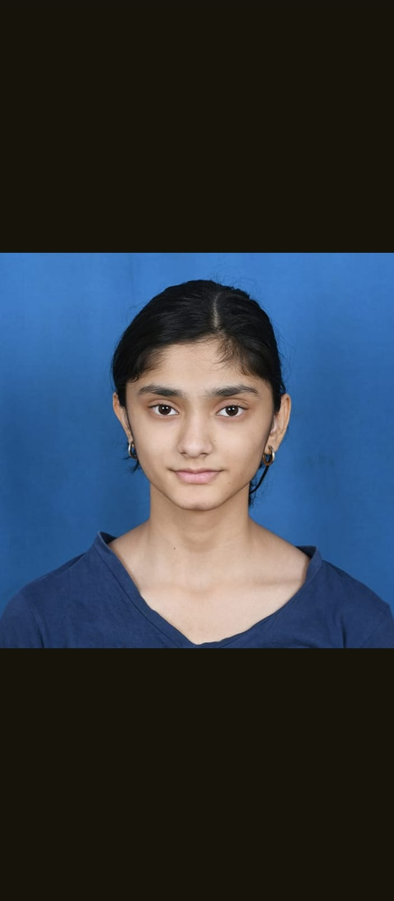

Hi, I’m Prerana. I’m an aerospace engineering student with a love for problem-solving, coding, and exploring the mechanics of how things fly. Beyond academics, I’m involved in clubs like AeroBMSCE and rocketry, where I collaborate on exciting projects and research. I’m driven by curiosity, motivated by challenges, and constantly working toward my dream of pushing the boundaries of aerospace and technology.
I am currently doing BE in BMS College Of Engineering. I did my schooling in SCTS,BMNPS, Aurobindo Composite PU College Integrated with Aakash Institutions
Skills
Technical:
- Aerospace Engineering Fundamentals: aircraft design, aerodynamics, propulsion, stability & control
- Mechanical & Materials: manufacturing processes (lathe, milling, CNC, additive manufacturing), stress-strain analysis, crystal systems
- Rocketry & Space Systems: propulsion concepts, micro-aircraft design, static stability analysis (XFLR5)
- Digital Electronics Basics: minterms, maxterms, half/full adders
- Programming & Tools: Python, MATLAB, CAD, Open motor, XFLR5, problem-solving & algorithmic thinking
Research and Analytical
- Strong foundation in Physics and Mathematics (JEE-level and advanced problem solving)
- Research experience in biochar and energy storage materials (XRD, FTIR, sonication, activation processes)
- Ability to connect theoretical knowledge with practical aerospace and materials applications
Leadership & Collaboration
- Event coordination and management (college tech fest)
- Active contributor in AeroBMSCE and Rocketry clubs
- Strong teamwork and communication skills (Campaigned for College events)
My contact details: Contact Me
My picture: 